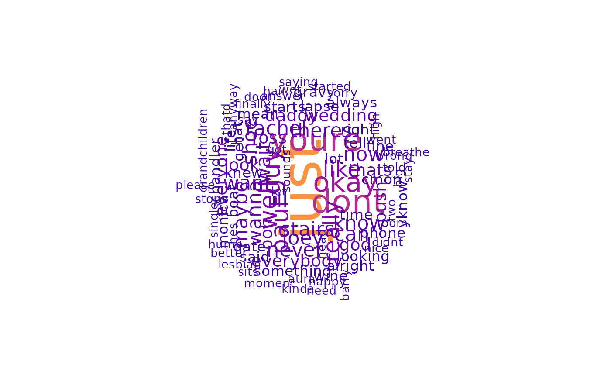

![[Experimental]](figures/lifecycle-experimental.svg)
plot_wordcloud() plots a word cloud using an output of word_frequency().
This function uses wordcloud() to generate word cloud graphics.
plot_wordcloud(
data,
min_freq = 2,
max_words = 100,
random_order = FALSE,
rot_per = 0.35,
colors = NULL,
...
)Arguments
- data
A
tibbleobject with two columns:word(with an unique set of words) andfreq(with the absolute frequency of a word inword). Useword_frequency()to generate this value.- min_freq
(optional) a number indicating the minimum frequency that a word can have to be plotted (default:
2).- max_words
(optional) a number indicating the maximum number of words to be plotted (default:
100).- random_order
(optional) a
logicalvalue indicating if the function must plot words in random order. IfFALSE, the words will be plotted in decreasing frequency. See wordcloud() to learn more (default:FALSE).- rot_per
(optional) a number indicating the proportion words with 90 degree rotation (default:
0.35).- colors
(optional) a
characterobject with Hex color codes indicating the color that the words must have, from least to most frequent. IfNULL, the viridis plasma palette will be used (default:NULL).- ...
(optional) additional parameters to be passed to the wordcloud() function.
Value
An invisible NULL. This function don't aim to return values.
See also
Other Plot functions:
plot_word_frequency()
Examples
if (requireNamespace("friends", quietly = TRUE)) {
data <- word_frequency(head(friends::friends[[1]], 100))
suppressMessages(plot_wordcloud(data))
## Note that graphics rendered in the documentation may
## not represent the quality of the output.
}
#>
#>

if (requireNamespace("stringi", quietly = TRUE)) {
data <- word_frequency(stringi::stri_rand_lipsum(5))
suppressMessages(plot_wordcloud(data))
## Note that graphics rendered in the documentation may
## not represent the quality of the output.
}
#>
#>